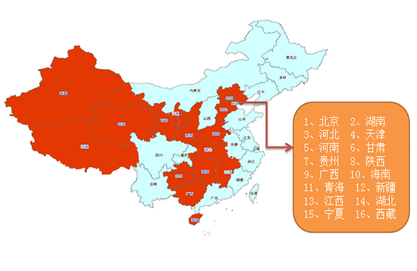

我们的优势和特色
- 平台优势：
- 公司积极参与了平台、终端、数据传输交换的国家标准的制定，受到了交通运输管理部门的高度认可。
- 平台建设方面，在交通运输部、公安部、安监总局各大部委的大力支持下，中交兴路成功完成2010年上海世博会的全国重点营运车辆的联网联控项目，并且建立了部、省、市三级监管平台，目前已接入“两客一危”运输车辆（旅游包车和三类以上的班线客车车辆、运输危险化学品、烟花爆竹、民用爆炸物品的道路专用车辆等）超过100万辆；
- 平台使用的是自主知识产权的地图引擎，通过特有的聚合技术，可支持单窗口同时监控管理几万台车辆。
- 服务优势：
- 依托交通运输部通信信息中心，中交兴路承建并维护着交通部联网联控平台以及十多个省份的道路运输安全监管平台，目前已经在18个省、直辖市成立分子公司，这些分子公司以本地化运营服务为建设目标，拥有完善的售后服务管理体系，能为用户提供及时、优质的售前售后服务。
- 系统稳定性强，已和多家车厂（宇通、申龙、亚星、金旅、陕汽、中集、斯堪尼亚）、知名设备供应商（航盛、本安、雅讯、华宝等）合作。
- 